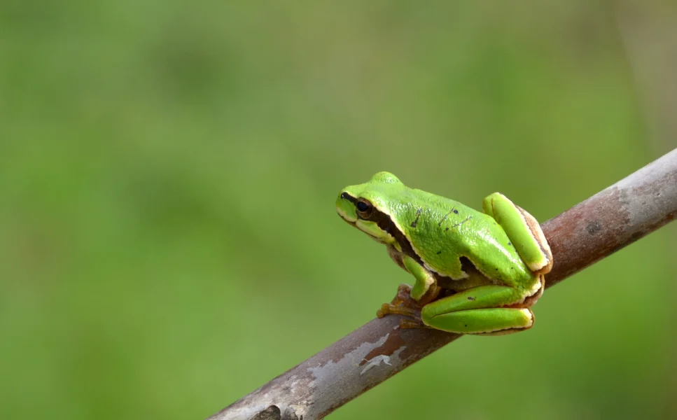
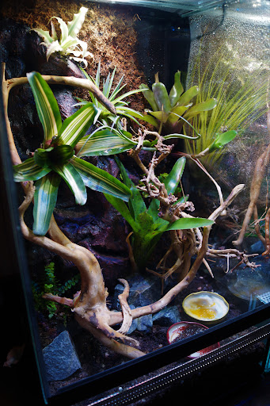

Pochodzenie
Europa i zachodnia Azja
Długość
3–5 cm
Długość życia
6–10 lat
Tryb życia
Nocny, nadrzewny
Cechy szczególne
Zmienia lekko odcień skóry zależnie od otoczenia
Poradnik hodowli i szczegółowe informacje o gatunku

Europa i zachodnia Azja
3–5 cm
6–10 lat
Nocny, nadrzewny
Zmienia lekko odcień skóry zależnie od otoczenia

Dzień: 22–26°C
Noc: 18–22°C
60–80%, codzienne zraszanie
Cykl dzień/noc, lekkie UVB mile widziane
Mech, włókno kokosowe, ziemia bioaktywna

Aktywna głównie wieczorem i nocą, świetnie się wspina.
Unikać częstego dotykania – bardzo delikatna skóra.